initialization_larger_K_comparison
Annie Xie
2025-09-25
Last updated: 2025-09-25
Checks: 7 0
Knit directory: covariance_decomps_dsc/
This reproducible R Markdown analysis was created with workflowr (version 1.7.1). The Checks tab describes the reproducibility checks that were applied when the results were created. The Past versions tab lists the development history.
Great! Since the R Markdown file has been committed to the Git repository, you know the exact version of the code that produced these results.
Great job! The global environment was empty. Objects defined in the global environment can affect the analysis in your R Markdown file in unknown ways. For reproduciblity it’s best to always run the code in an empty environment.
The command set.seed(20250203) was run prior to running
the code in the R Markdown file. Setting a seed ensures that any results
that rely on randomness, e.g. subsampling or permutations, are
reproducible.
Great job! Recording the operating system, R version, and package versions is critical for reproducibility.
Nice! There were no cached chunks for this analysis, so you can be confident that you successfully produced the results during this run.
Great job! Using relative paths to the files within your workflowr project makes it easier to run your code on other machines.
Great! You are using Git for version control. Tracking code development and connecting the code version to the results is critical for reproducibility.
The results in this page were generated with repository version 7edf26c. See the Past versions tab to see a history of the changes made to the R Markdown and HTML files.
Note that you need to be careful to ensure that all relevant files for
the analysis have been committed to Git prior to generating the results
(you can use wflow_publish or
wflow_git_commit). workflowr only checks the R Markdown
file, but you know if there are other scripts or data files that it
depends on. Below is the status of the Git repository when the results
were generated:
Ignored files:
Ignored: .DS_Store
Ignored: .Rhistory
Ignored: data/.DS_Store
Ignored: data/adclus_cov_comp_dsc_ex/.DS_Store
Ignored: data/adclus_same_init_dsc_ex/.DS_Store
Ignored: data/pt_laplace_split_init_ex/.DS_Store
Note that any generated files, e.g. HTML, png, CSS, etc., are not included in this status report because it is ok for generated content to have uncommitted changes.
These are the previous versions of the repository in which changes were
made to the R Markdown
(analysis/initialization_larger_K_comparison.Rmd) and HTML
(docs/initialization_larger_K_comparison.html) files. If
you’ve configured a remote Git repository (see
?wflow_git_remote), click on the hyperlinks in the table
below to view the files as they were in that past version.
| File | Version | Author | Date | Message |
|---|---|---|---|---|
| Rmd | 7edf26c | Annie Xie | 2025-09-25 | Add comparison of initialization strategies with large K |
Introduction
In this analysis, I compare three different initialization strategies which were given double the number of correct components. In practice, the number of components is unknown, so I want to explore how these initialization strategies perform when given too many components. Furthermore, the question of what initialization performs the best is intertwined with the question of how to choose the (maximum) number of components to fit. With flashier, we generally advise users to use a lot of components; the method should stop adding components when additional components no longer help.
library(dplyr)
library(ggplot2)
library(ggrepel)
library(pheatmap)source('code/visualization_functions.R')Prepare the DSC data
dscout <- readRDS("data/same_init_dsc_results_df.rds")
dscout <- dscout %>% filter((initialization.K_factor == 1 & initialization == 'pt_laplace_split') | (initialization.K_factor == 2 & initialization != 'pt_laplace_split'), (is.na(score.threshold) == TRUE | score.threshold == 0.9))
dim(dscout)[1] 6600 13I decided to focus on the variant of SINDCLUS and SYMPRES that does not explicitly model an intercept. So I clean the data to only include these variants. I also will focus on the generalized binary prior, so I will clean the data to only include that prior.
dscout <- dscout %>% filter((is.na(analyze.additive_term) == TRUE) | (analyze.additive_term == 'FALSE'), (is.na(analyze.ebnm_fn) == TRUE) | (analyze.ebnm_fn == 'ebnm::ebnm_generalized_binary')) %>% select(!(analyze.off_diagonal))Unbalanced Nonoverlapping
Crossproduct Similarity
dscout %>% filter(simulate == 'group_nonoverlap', simulate.pop_sizes != 'rep(40, 4)', score == 'crossprod_similarity') %>% group_by(analyze, initialization) %>% summarise(avg_result = mean(score.result))`summarise()` has grouped output by 'analyze'. You can override using the
`.groups` argument.# A tibble: 18 × 3
# Groups: analyze [6]
analyze initialization avg_result
<chr> <chr> <dbl>
1 codesymnmf codesymnmf_init 0.999
2 codesymnmf ebmfcov_greedy_refit_alt 0.999
3 codesymnmf pt_laplace_split 0.999
4 ebcd codesymnmf_init 0.999
5 ebcd ebmfcov_greedy_refit_alt 1.00
6 ebcd pt_laplace_split 1.00
7 ebmfcov_diag codesymnmf_init 1.00
8 ebmfcov_diag ebmfcov_greedy_refit_alt 1.00
9 ebmfcov_diag pt_laplace_split 1.00
10 flash_normalf codesymnmf_init 1.00
11 flash_normalf ebmfcov_greedy_refit_alt 0.991
12 flash_normalf pt_laplace_split 1.00
13 sindclus codesymnmf_init 1
14 sindclus ebmfcov_greedy_refit_alt 1
15 sindclus pt_laplace_split 1
16 sympres codesymnmf_init 1
17 sympres ebmfcov_greedy_refit_alt 1
18 sympres pt_laplace_split 1 unbal_nonoverlap_crossprod_results <- dscout %>% filter(simulate == 'group_nonoverlap', simulate.pop_sizes != 'rep(40, 4)', score == 'crossprod_similarity') %>% group_by(analyze, initialization) %>% summarise(metric = mean(score.result)) %>% mutate(method = paste(analyze, initialization, sep='-')) %>% rename(grouping = initialization)`summarise()` has grouped output by 'analyze'. You can override using the
`.groups` argument.dot_plot(unbal_nonoverlap_crossprod_results, 'Crossproduct Similarity for Unbalanced Nonoverlapping', '', '')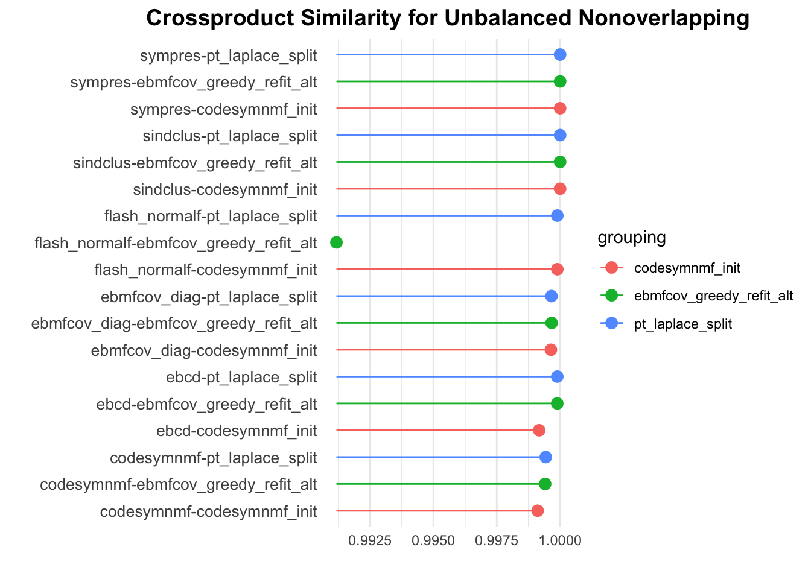
The CoDesymNMF and point-Laplace initialization procedures both perform really well in this setting. The EBMFcov greedy with refitting strategy also performs well, but it performs slightly worse with Flash with a normal prior on \(F\) (It’s not a significant difference).
Proportions
dscout %>% filter(simulate == 'group_nonoverlap', simulate.pop_sizes != 'rep(40, 4)', score == 'prop_true_high_cos_sim') %>% group_by(analyze, analyze.ebnm_fn, initialization) %>% summarise(avg_result = mean(score.result))`summarise()` has grouped output by 'analyze', 'analyze.ebnm_fn'. You can
override using the `.groups` argument.# A tibble: 18 × 4
# Groups: analyze, analyze.ebnm_fn [6]
analyze analyze.ebnm_fn initialization avg_result
<chr> <chr> <chr> <dbl>
1 codesymnmf <NA> codesymnmf_init 1
2 codesymnmf <NA> ebmfcov_greedy_refit_… 1
3 codesymnmf <NA> pt_laplace_split 1
4 ebcd ebnm::ebnm_generalized_binary codesymnmf_init 1
5 ebcd ebnm::ebnm_generalized_binary ebmfcov_greedy_refit_… 1
6 ebcd ebnm::ebnm_generalized_binary pt_laplace_split 1
7 ebmfcov_diag ebnm::ebnm_generalized_binary codesymnmf_init 1
8 ebmfcov_diag ebnm::ebnm_generalized_binary ebmfcov_greedy_refit_… 1
9 ebmfcov_diag ebnm::ebnm_generalized_binary pt_laplace_split 1
10 flash_normalf ebnm::ebnm_generalized_binary codesymnmf_init 1
11 flash_normalf ebnm::ebnm_generalized_binary ebmfcov_greedy_refit_… 0.95
12 flash_normalf ebnm::ebnm_generalized_binary pt_laplace_split 1
13 sindclus <NA> codesymnmf_init 1
14 sindclus <NA> ebmfcov_greedy_refit_… 1
15 sindclus <NA> pt_laplace_split 1
16 sympres <NA> codesymnmf_init 1
17 sympres <NA> ebmfcov_greedy_refit_… 1
18 sympres <NA> pt_laplace_split 1 unbal_nonoverlap_prop_results <- dscout %>% filter(simulate == 'group_nonoverlap', simulate.pop_sizes != 'rep(40, 4)', score == 'prop_true_high_cos_sim') %>% group_by(analyze, analyze.ebnm_fn, initialization) %>% summarise(metric = mean(score.result)) %>% mutate(method = paste(analyze, initialization, sep='-')) %>% rename(grouping = initialization)`summarise()` has grouped output by 'analyze', 'analyze.ebnm_fn'. You can
override using the `.groups` argument.dot_plot(unbal_nonoverlap_prop_results, 'Proportion Recovered for Unbalanced Nonoverlapping', '', '')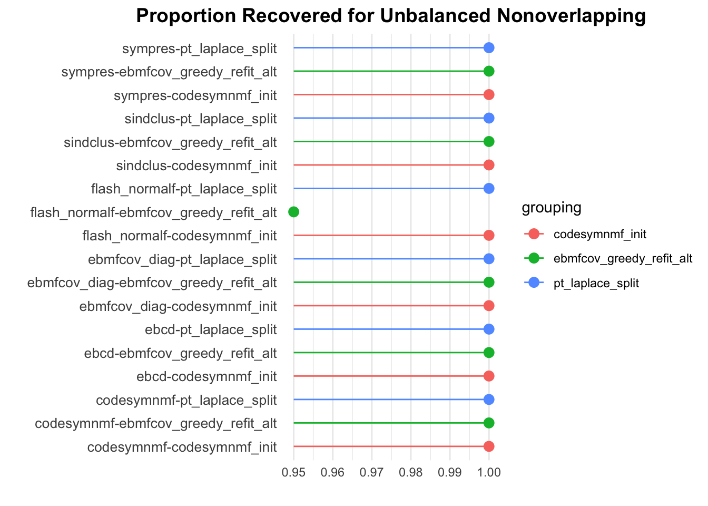
We see similar trends with the proportion recovered metric.
prop_data_df <- dscout %>% filter(simulate == 'group_nonoverlap', simulate.pop_sizes != 'rep(40, 4)', score %in% c('prop_true_high_cos_sim', 'prop_est_high_cos_sim')) %>% group_by(analyze, analyze.ebnm_fn, initialization, score) %>% summarise(metric = mean(score.result)) %>% mutate(method = paste(analyze, initialization, sep='-'))`summarise()` has grouped output by 'analyze', 'analyze.ebnm_fn',
'initialization'. You can override using the `.groups` argument.prop_est_high_cos_sim_vals <- prop_data_df[(prop_data_df$score == 'prop_est_high_cos_sim') , ][['metric']]
prop_true_high_cos_sim_vals <- prop_data_df[(prop_data_df$score == 'prop_true_high_cos_sim') , ][['metric']]
methods <- prop_data_df[(prop_data_df$score == 'prop_est_high_cos_sim') , ][['analyze']]
initialization <- prop_data_df[(prop_data_df$score == 'prop_est_high_cos_sim') , ][['initialization']]
prop_plot_df <- data.frame(method = methods, prop_est_high_cos_sim_vals = prop_est_high_cos_sim_vals, prop_true_high_cos_sim_vals = prop_true_high_cos_sim_vals, initialization = initialization)ggplot(data = prop_plot_df, aes(x = prop_est_high_cos_sim_vals, y = prop_true_high_cos_sim_vals,
color = initialization, shape = method)) +
facet_wrap(~ initialization, scales = "fixed") +
geom_point(size = 3) +
labs(title = "",
x = "Proportion of Estimate Capturing True Signal",
y = "Proportion of True Signals Recovered")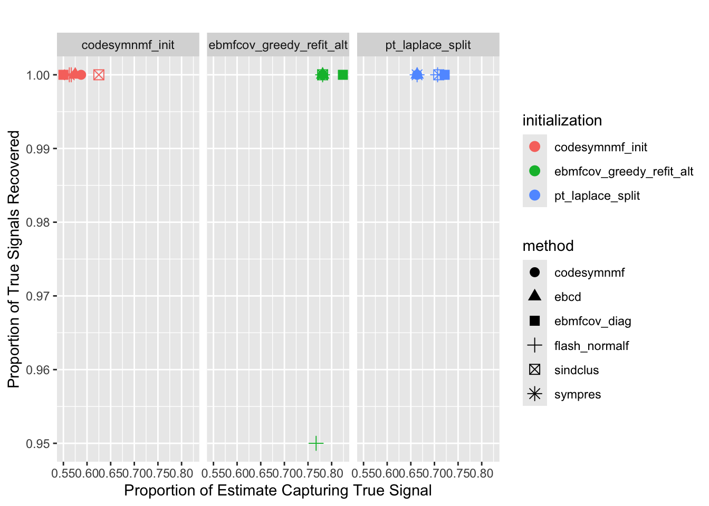
We see that almost all of the methods recover all of the true signals. Furthermore, we see that all of the methods return extra factors. The EBMFcov greedy with refitting method returned the fewest number of extra factors.
Balanced Nonoverlapping
Crossproduct Similarity
dscout %>% filter(simulate == 'group_nonoverlap', simulate.pop_sizes == 'rep(40, 4)', score == 'crossprod_similarity') %>% group_by(analyze, initialization) %>% summarise(avg_result = mean(score.result))`summarise()` has grouped output by 'analyze'. You can override using the
`.groups` argument.# A tibble: 18 × 3
# Groups: analyze [6]
analyze initialization avg_result
<chr> <chr> <dbl>
1 codesymnmf codesymnmf_init 1.00
2 codesymnmf ebmfcov_greedy_refit_alt 0.972
3 codesymnmf pt_laplace_split 1.00
4 ebcd codesymnmf_init 1.00
5 ebcd ebmfcov_greedy_refit_alt 0.970
6 ebcd pt_laplace_split 1.00
7 ebmfcov_diag codesymnmf_init 1.00
8 ebmfcov_diag ebmfcov_greedy_refit_alt 0.968
9 ebmfcov_diag pt_laplace_split 1.00
10 flash_normalf codesymnmf_init 1.00
11 flash_normalf ebmfcov_greedy_refit_alt 0.928
12 flash_normalf pt_laplace_split 0.995
13 sindclus codesymnmf_init 1
14 sindclus ebmfcov_greedy_refit_alt 0.968
15 sindclus pt_laplace_split 1
16 sympres codesymnmf_init 1
17 sympres ebmfcov_greedy_refit_alt 0.968
18 sympres pt_laplace_split 1 bal_nonoverlap_crossprod_results <- dscout %>% filter(simulate == 'group_nonoverlap', simulate.pop_sizes == 'rep(40, 4)', score == 'crossprod_similarity') %>% group_by(analyze, initialization) %>% summarise(metric = mean(score.result)) %>% mutate(method = paste(analyze, initialization, sep='-')) %>% rename(grouping = initialization)`summarise()` has grouped output by 'analyze'. You can override using the
`.groups` argument.dot_plot(bal_nonoverlap_crossprod_results, 'Crossproduct Similarity for Balanced Nonoverlapping', '', '')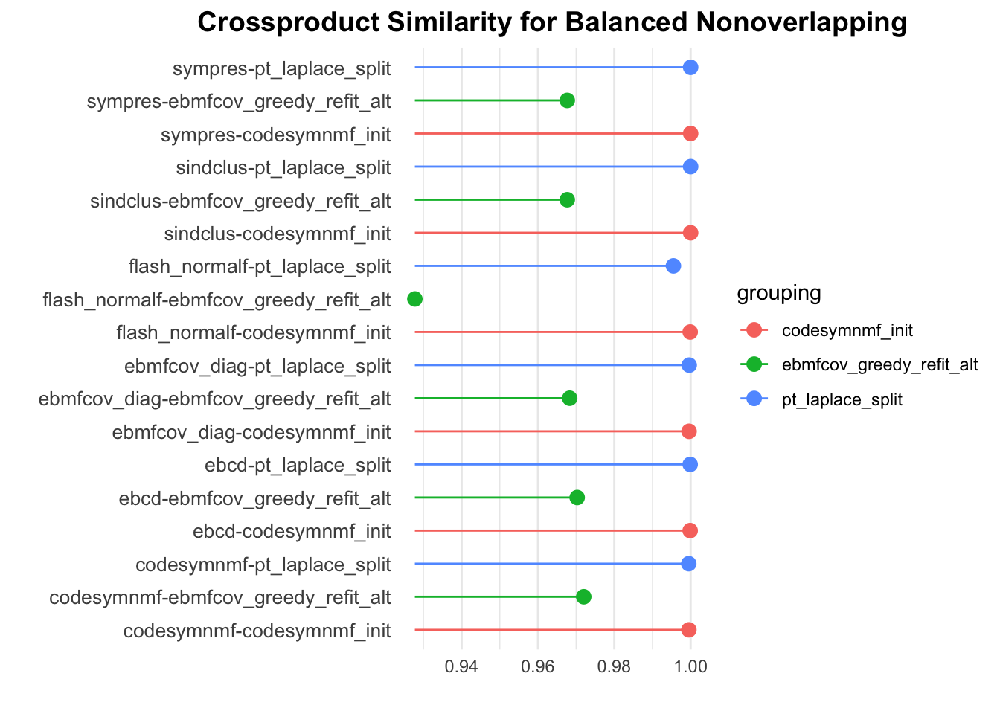
The CoDesymNMF and point-Laplace initialization strategies both perform well. The EBMFcov greedy with refitting strategy performs slightly worse.
Proportions
dscout %>% filter(simulate == 'group_nonoverlap', simulate.pop_sizes == 'rep(40, 4)', score == 'prop_true_high_cos_sim') %>% group_by(analyze, analyze.ebnm_fn, initialization) %>% summarise(avg_result = mean(score.result))`summarise()` has grouped output by 'analyze', 'analyze.ebnm_fn'. You can
override using the `.groups` argument.# A tibble: 18 × 4
# Groups: analyze, analyze.ebnm_fn [6]
analyze analyze.ebnm_fn initialization avg_result
<chr> <chr> <chr> <dbl>
1 codesymnmf <NA> codesymnmf_init 1
2 codesymnmf <NA> ebmfcov_greedy_refit_… 0.975
3 codesymnmf <NA> pt_laplace_split 1
4 ebcd ebnm::ebnm_generalized_binary codesymnmf_init 1
5 ebcd ebnm::ebnm_generalized_binary ebmfcov_greedy_refit_… 0.95
6 ebcd ebnm::ebnm_generalized_binary pt_laplace_split 1
7 ebmfcov_diag ebnm::ebnm_generalized_binary codesymnmf_init 1
8 ebmfcov_diag ebnm::ebnm_generalized_binary ebmfcov_greedy_refit_… 0.95
9 ebmfcov_diag ebnm::ebnm_generalized_binary pt_laplace_split 1
10 flash_normalf ebnm::ebnm_generalized_binary codesymnmf_init 1
11 flash_normalf ebnm::ebnm_generalized_binary ebmfcov_greedy_refit_… 0.725
12 flash_normalf ebnm::ebnm_generalized_binary pt_laplace_split 0.975
13 sindclus <NA> codesymnmf_init 1
14 sindclus <NA> ebmfcov_greedy_refit_… 0.95
15 sindclus <NA> pt_laplace_split 1
16 sympres <NA> codesymnmf_init 1
17 sympres <NA> ebmfcov_greedy_refit_… 0.95
18 sympres <NA> pt_laplace_split 1 bal_nonoverlap_prop_results <- dscout %>% filter(simulate == 'group_nonoverlap', simulate.pop_sizes == 'rep(40, 4)', score == 'prop_true_high_cos_sim') %>% group_by(analyze, analyze.ebnm_fn, initialization) %>% summarise(metric = mean(score.result)) %>% mutate(method = paste(analyze, initialization, sep='-')) %>% rename(grouping = initialization)`summarise()` has grouped output by 'analyze', 'analyze.ebnm_fn'. You can
override using the `.groups` argument.dot_plot(bal_nonoverlap_prop_results, 'Proportion Recovered for Unbalanced Nonoverlapping', '', '')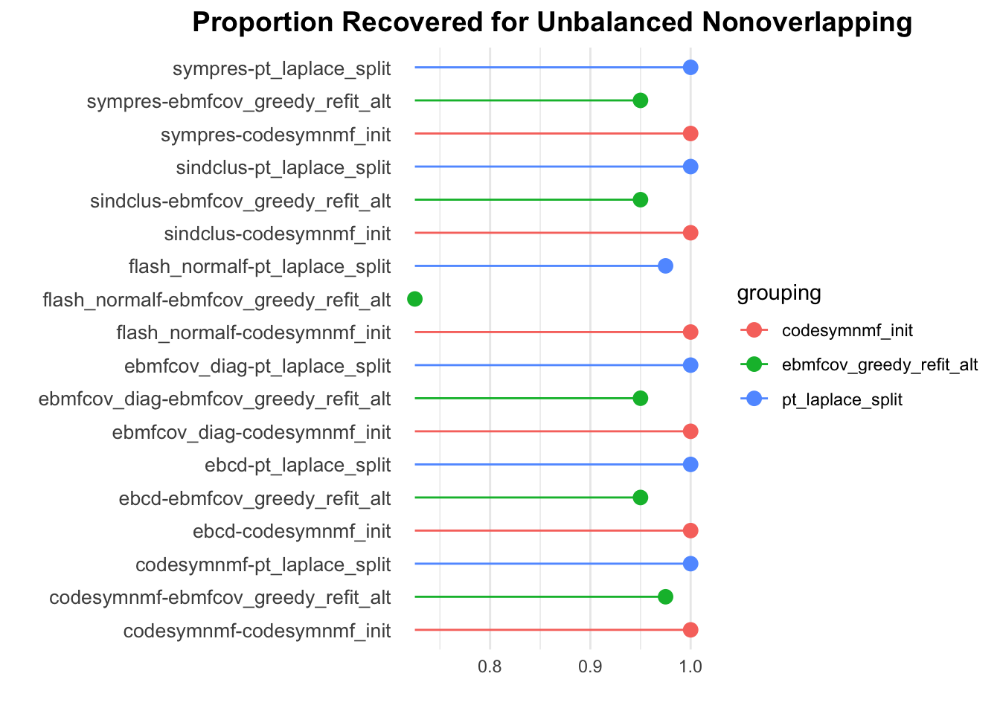
We generally see the same trends with this metric. Before, I was under the impression that the EBMFcov greedy with refitting method was performing worse because it would often add a baseline factor for the first factor, and before, I limited the number of factors it could add to 4. I suspected that if it was allowed to add more factors, then it would be able to find all of the true effects. But these results don’t suggest that. So maybe there are some other issues in this setting.
prop_data_df <- dscout %>% filter(simulate == 'group_nonoverlap', simulate.pop_sizes == 'rep(40, 4)', score %in% c('prop_true_high_cos_sim', 'prop_est_high_cos_sim')) %>% group_by(analyze, analyze.ebnm_fn, initialization, score) %>% summarise(metric = mean(score.result)) %>% mutate(method = paste(analyze, initialization, sep='-'))`summarise()` has grouped output by 'analyze', 'analyze.ebnm_fn',
'initialization'. You can override using the `.groups` argument.prop_est_high_cos_sim_vals <- prop_data_df[(prop_data_df$score == 'prop_est_high_cos_sim') , ][['metric']]
prop_true_high_cos_sim_vals <- prop_data_df[(prop_data_df$score == 'prop_true_high_cos_sim') , ][['metric']]
methods <- prop_data_df[(prop_data_df$score == 'prop_est_high_cos_sim') , ][['analyze']]
initialization <- prop_data_df[(prop_data_df$score == 'prop_est_high_cos_sim') , ][['initialization']]
prop_plot_df <- data.frame(method = methods, prop_est_high_cos_sim_vals = prop_est_high_cos_sim_vals, prop_true_high_cos_sim_vals = prop_true_high_cos_sim_vals, initialization = initialization)ggplot(data = prop_plot_df, aes(x = prop_est_high_cos_sim_vals, y = prop_true_high_cos_sim_vals,
color = initialization, shape = method)) +
facet_wrap(~ initialization, scales = "fixed") +
geom_point(size = 3) +
labs(title = "",
x = "Proportion of Estimate Capturing True Signal",
y = "Proportion of True Signals Recovered")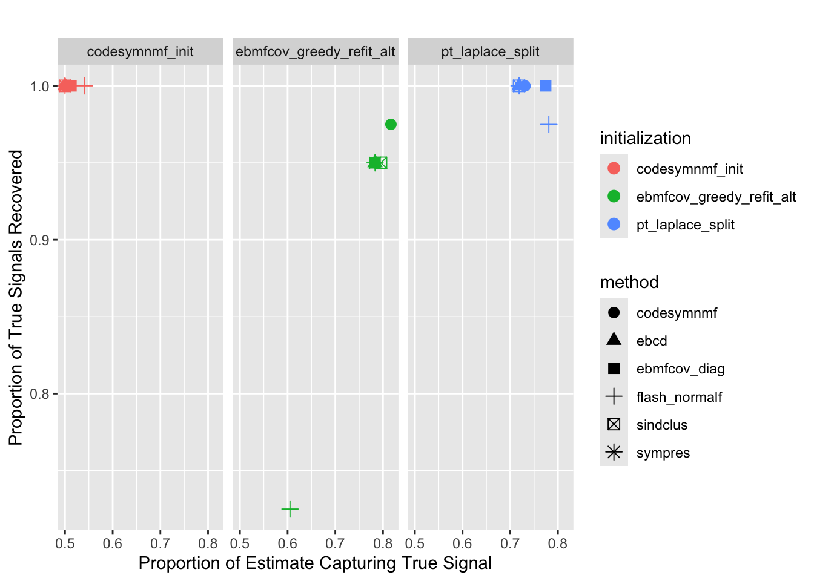
Most of the point-Laplace plus splitting methods are able to recover all of the true signals. All of the CoDesymNMF methods are able to recover all of the true signals. As noted before, the EBMFcov greedy with refitting performs worse than the other two initialization strategies. Again, all of the methods return extra factors. The CoDesymNMF initialed methods return the largest number of extra factors.
Balanced Tree
Crossproduct Similarity
dscout %>% filter(simulate == 'baltree_4pop', score == 'crossprod_similarity') %>% group_by(analyze, initialization) %>% summarise(avg_result = mean(score.result))`summarise()` has grouped output by 'analyze'. You can override using the
`.groups` argument.# A tibble: 18 × 3
# Groups: analyze [6]
analyze initialization avg_result
<chr> <chr> <dbl>
1 codesymnmf codesymnmf_init 0.933
2 codesymnmf ebmfcov_greedy_refit_alt 0.994
3 codesymnmf pt_laplace_split 0.998
4 ebcd codesymnmf_init 0.806
5 ebcd ebmfcov_greedy_refit_alt 0.956
6 ebcd pt_laplace_split 0.991
7 ebmfcov_diag codesymnmf_init 0.910
8 ebmfcov_diag ebmfcov_greedy_refit_alt 0.951
9 ebmfcov_diag pt_laplace_split 0.996
10 flash_normalf codesymnmf_init 0.773
11 flash_normalf ebmfcov_greedy_refit_alt 0.794
12 flash_normalf pt_laplace_split 0.795
13 sindclus codesymnmf_init 0.910
14 sindclus ebmfcov_greedy_refit_alt 0.994
15 sindclus pt_laplace_split 1
16 sympres codesymnmf_init 0.895
17 sympres ebmfcov_greedy_refit_alt 0.999
18 sympres pt_laplace_split 1 baltree_crossprod_results <- dscout %>% filter(simulate == 'baltree_4pop', score == 'crossprod_similarity') %>% group_by(analyze, initialization) %>% summarise(metric = mean(score.result)) %>% mutate(method = paste(analyze, initialization, sep='-')) %>% rename(grouping = initialization)`summarise()` has grouped output by 'analyze'. You can override using the
`.groups` argument.dot_plot(baltree_crossprod_results, 'Crossproduct Similarity for Balanced Tree', '', '')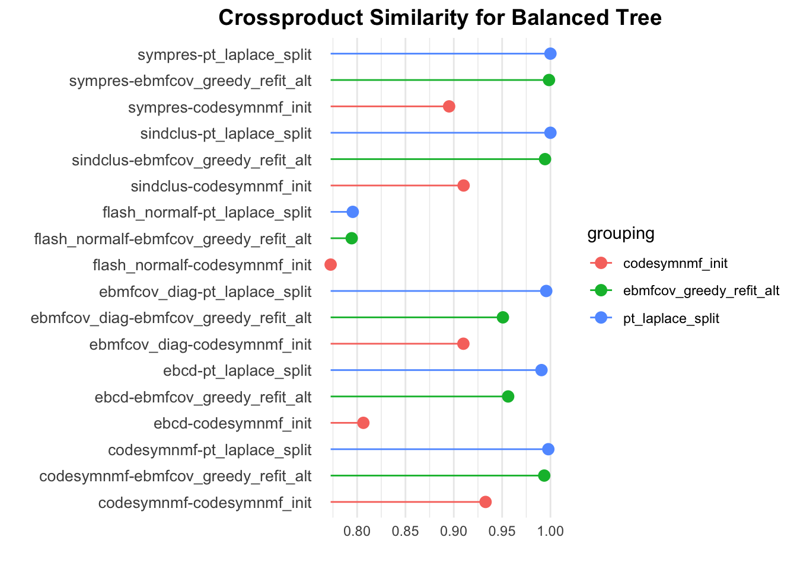
With regards to the crossproduct similarity, the CoDesymNMF initialization performs the worst. The point-Laplace plus splitting strategy performs the best.
Proportions
dscout %>% filter(simulate == 'baltree_4pop', score == 'prop_true_high_cos_sim') %>% group_by(analyze, analyze.ebnm_fn, initialization) %>% summarise(avg_result = mean(score.result))`summarise()` has grouped output by 'analyze', 'analyze.ebnm_fn'. You can
override using the `.groups` argument.# A tibble: 18 × 4
# Groups: analyze, analyze.ebnm_fn [6]
analyze analyze.ebnm_fn initialization avg_result
<chr> <chr> <chr> <dbl>
1 codesymnmf <NA> codesymnmf_init 0.9
2 codesymnmf <NA> ebmfcov_greedy_refit_… 1
3 codesymnmf <NA> pt_laplace_split 1
4 ebcd ebnm::ebnm_generalized_binary codesymnmf_init 0.729
5 ebcd ebnm::ebnm_generalized_binary ebmfcov_greedy_refit_… 0.829
6 ebcd ebnm::ebnm_generalized_binary pt_laplace_split 0.971
7 ebmfcov_diag ebnm::ebnm_generalized_binary codesymnmf_init 0.757
8 ebmfcov_diag ebnm::ebnm_generalized_binary ebmfcov_greedy_refit_… 0.814
9 ebmfcov_diag ebnm::ebnm_generalized_binary pt_laplace_split 0.986
10 flash_normalf ebnm::ebnm_generalized_binary codesymnmf_init 0.6
11 flash_normalf ebnm::ebnm_generalized_binary ebmfcov_greedy_refit_… 0.643
12 flash_normalf ebnm::ebnm_generalized_binary pt_laplace_split 0.7
13 sindclus <NA> codesymnmf_init 0.771
14 sindclus <NA> ebmfcov_greedy_refit_… 0.971
15 sindclus <NA> pt_laplace_split 1
16 sympres <NA> codesymnmf_init 0.557
17 sympres <NA> ebmfcov_greedy_refit_… 1
18 sympres <NA> pt_laplace_split 1 baltree_prop_results <- dscout %>% filter(simulate == 'baltree_4pop', score == 'prop_true_high_cos_sim') %>% group_by(analyze, analyze.ebnm_fn, initialization) %>% summarise(metric = mean(score.result)) %>% mutate(method = paste(analyze, initialization, sep='-')) %>% rename(grouping = initialization)`summarise()` has grouped output by 'analyze', 'analyze.ebnm_fn'. You can
override using the `.groups` argument.dot_plot(baltree_prop_results, 'Proportion Recovered for Balanced Tree', '', '')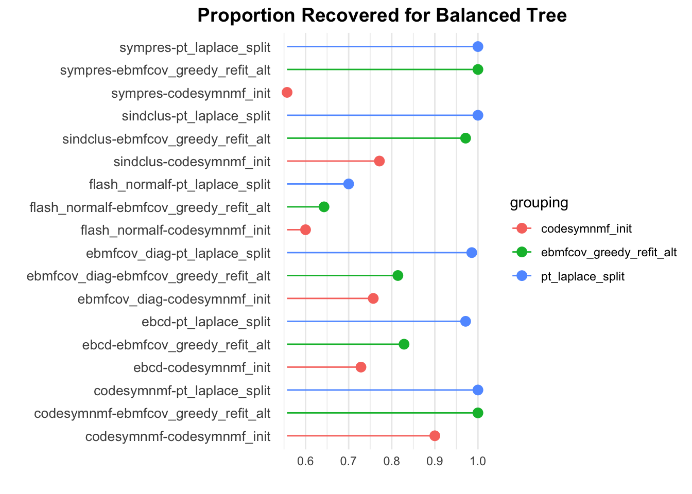
We see the same trends with the proportion recovered metric.
prop_data_df <- dscout %>% filter(simulate == 'baltree_4pop', score %in% c('prop_true_high_cos_sim', 'prop_est_high_cos_sim')) %>% group_by(analyze, analyze.ebnm_fn, initialization, score) %>% summarise(metric = mean(score.result)) %>% mutate(method = paste(analyze, initialization, sep='-'))`summarise()` has grouped output by 'analyze', 'analyze.ebnm_fn',
'initialization'. You can override using the `.groups` argument.prop_est_high_cos_sim_vals <- prop_data_df[(prop_data_df$score == 'prop_est_high_cos_sim') , ][['metric']]
prop_true_high_cos_sim_vals <- prop_data_df[(prop_data_df$score == 'prop_true_high_cos_sim') , ][['metric']]
methods <- prop_data_df[(prop_data_df$score == 'prop_est_high_cos_sim') , ][['analyze']]
initialization <- prop_data_df[(prop_data_df$score == 'prop_est_high_cos_sim') , ][['initialization']]
prop_plot_df <- data.frame(method = methods, prop_est_high_cos_sim_vals = prop_est_high_cos_sim_vals, prop_true_high_cos_sim_vals = prop_true_high_cos_sim_vals, initialization = initialization)ggplot(data = prop_plot_df, aes(x = prop_est_high_cos_sim_vals, y = prop_true_high_cos_sim_vals,
color = initialization, shape = method)) +
facet_wrap(~ initialization, scales = "fixed") +
geom_point(size = 3) +
labs(title = "",
x = "Proportion of Estimate Capturing True Signal",
y = "Proportion of True Signals Recovered")
In this case, point-Laplace with splitting does not return any extra factors. This initialization seems to reach the ideal case of not returning extra factors and recovering all of the real signal. The CoDesymNMF initialized methods perform the worst in this setting. This is not surprising since CoDesymNMF struggles to find trees. Some of the EBMFcov greedy with refitting methods are able to recover all of the true effects, but they also return extra factors.
Sparse Overlapping
Crossproduct Similarity
dscout %>% filter(simulate == 'group_overlap', score == 'crossprod_similarity') %>% group_by(analyze, initialization) %>% summarise(avg_result = mean(score.result))`summarise()` has grouped output by 'analyze'. You can override using the
`.groups` argument.# A tibble: 18 × 3
# Groups: analyze [6]
analyze initialization avg_result
<chr> <chr> <dbl>
1 codesymnmf codesymnmf_init 0.982
2 codesymnmf ebmfcov_greedy_refit_alt 0.989
3 codesymnmf pt_laplace_split 0.984
4 ebcd codesymnmf_init 0.993
5 ebcd ebmfcov_greedy_refit_alt 0.992
6 ebcd pt_laplace_split 0.978
7 ebmfcov_diag codesymnmf_init 0.999
8 ebmfcov_diag ebmfcov_greedy_refit_alt 0.999
9 ebmfcov_diag pt_laplace_split 0.972
10 flash_normalf codesymnmf_init 0.999
11 flash_normalf ebmfcov_greedy_refit_alt 0.987
12 flash_normalf pt_laplace_split 0.928
13 sindclus codesymnmf_init 0.991
14 sindclus ebmfcov_greedy_refit_alt 0.992
15 sindclus pt_laplace_split 0.980
16 sympres codesymnmf_init 0.994
17 sympres ebmfcov_greedy_refit_alt 0.994
18 sympres pt_laplace_split 0.992overlap_crossprod_results <- dscout %>% filter(simulate == 'group_overlap', score == 'crossprod_similarity') %>% group_by(analyze, initialization) %>% summarise(metric = mean(score.result)) %>% mutate(method = paste(analyze, initialization, sep='-')) %>% rename(grouping = initialization)`summarise()` has grouped output by 'analyze'. You can override using the
`.groups` argument.dot_plot(overlap_crossprod_results, 'Crossproduct Similarity for Overlapping', '', '')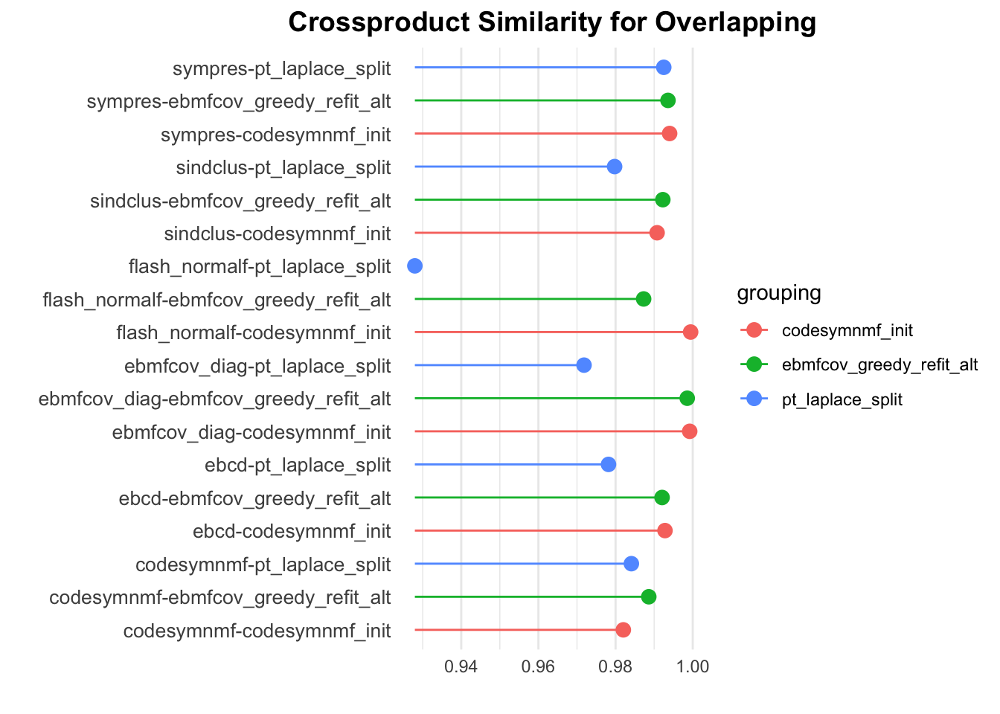
With respect to the crossproduct similarity, the point-Laplace plus splitting strategy generally performs the worst. I would say that the CoDesymNMF and EBMFcov greedy plus refitting initializations have comparable performance.
Proportions
dscout %>% filter(simulate == 'group_overlap', score == 'prop_true_high_cos_sim') %>% group_by(analyze, analyze.ebnm_fn, initialization) %>% summarise(avg_result = mean(score.result))`summarise()` has grouped output by 'analyze', 'analyze.ebnm_fn'. You can
override using the `.groups` argument.# A tibble: 18 × 4
# Groups: analyze, analyze.ebnm_fn [6]
analyze analyze.ebnm_fn initialization avg_result
<chr> <chr> <chr> <dbl>
1 codesymnmf <NA> codesymnmf_init 1
2 codesymnmf <NA> ebmfcov_greedy_refit_… 1
3 codesymnmf <NA> pt_laplace_split 1
4 ebcd ebnm::ebnm_generalized_binary codesymnmf_init 1
5 ebcd ebnm::ebnm_generalized_binary ebmfcov_greedy_refit_… 0.98
6 ebcd ebnm::ebnm_generalized_binary pt_laplace_split 0.88
7 ebmfcov_diag ebnm::ebnm_generalized_binary codesymnmf_init 1
8 ebmfcov_diag ebnm::ebnm_generalized_binary ebmfcov_greedy_refit_… 1
9 ebmfcov_diag ebnm::ebnm_generalized_binary pt_laplace_split 0.88
10 flash_normalf ebnm::ebnm_generalized_binary codesymnmf_init 1
11 flash_normalf ebnm::ebnm_generalized_binary ebmfcov_greedy_refit_… 0.92
12 flash_normalf ebnm::ebnm_generalized_binary pt_laplace_split 0.67
13 sindclus <NA> codesymnmf_init 0.97
14 sindclus <NA> ebmfcov_greedy_refit_… 0.97
15 sindclus <NA> pt_laplace_split 0.92
16 sympres <NA> codesymnmf_init 0.98
17 sympres <NA> ebmfcov_greedy_refit_… 0.97
18 sympres <NA> pt_laplace_split 0.96overlap_prop_results <- dscout %>% filter(simulate == 'group_overlap', score == 'prop_true_high_cos_sim') %>% group_by(analyze, analyze.ebnm_fn, initialization) %>% summarise(metric = mean(score.result)) %>% mutate(method = paste(analyze, initialization, sep='-')) %>% rename(grouping = initialization)`summarise()` has grouped output by 'analyze', 'analyze.ebnm_fn'. You can
override using the `.groups` argument.dot_plot(overlap_prop_results, 'Proportion Recovered for Overlapping', '', '')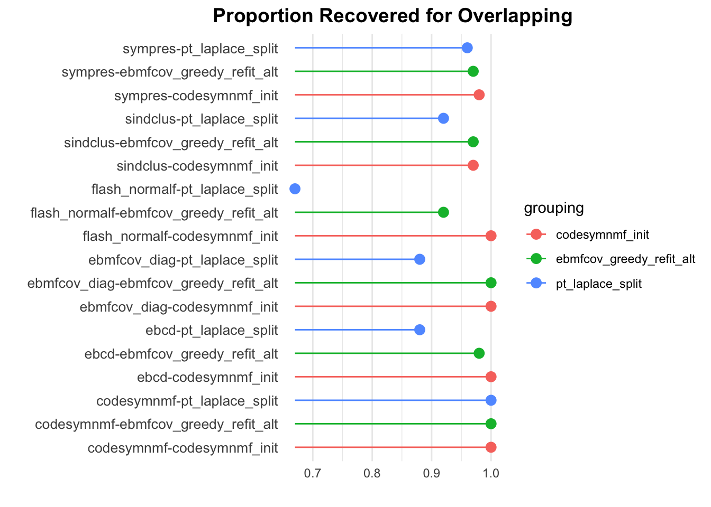
We see similar trends here. With this metric, I would say that the CoDesymNMF initialzation peforms slightly better than the EBMFcov greedy plus refitting initialization.
prop_data_df <- dscout %>% filter(simulate == 'group_overlap', score %in% c('prop_true_high_cos_sim', 'prop_est_high_cos_sim')) %>% group_by(analyze, analyze.ebnm_fn, initialization, score) %>% summarise(metric = mean(score.result)) %>% mutate(method = paste(analyze, initialization, sep='-'))`summarise()` has grouped output by 'analyze', 'analyze.ebnm_fn',
'initialization'. You can override using the `.groups` argument.prop_est_high_cos_sim_vals <- prop_data_df[(prop_data_df$score == 'prop_est_high_cos_sim') , ][['metric']]
prop_true_high_cos_sim_vals <- prop_data_df[(prop_data_df$score == 'prop_true_high_cos_sim') , ][['metric']]
methods <- prop_data_df[(prop_data_df$score == 'prop_est_high_cos_sim') , ][['analyze']]
initialization <- prop_data_df[(prop_data_df$score == 'prop_est_high_cos_sim') , ][['initialization']]
prop_plot_df <- data.frame(method = methods, prop_est_high_cos_sim_vals = prop_est_high_cos_sim_vals, prop_true_high_cos_sim_vals = prop_true_high_cos_sim_vals, initialization = initialization)ggplot(data = prop_plot_df, aes(x = prop_est_high_cos_sim_vals, y = prop_true_high_cos_sim_vals,
color = initialization, shape = method)) +
facet_wrap(~ initialization, scales = "fixed") +
geom_point(size = 3) +
labs(title = "",
x = "Proportion of Estimate Capturing True Signal",
y = "Proportion of True Signals Recovered")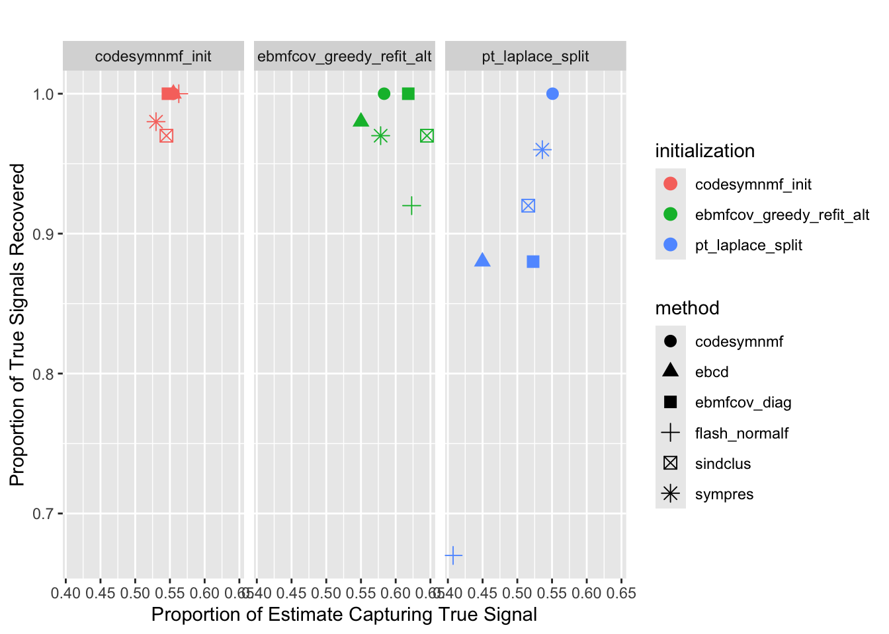
In this setting, we see that all of the methods return extra factors. The EBMFcov greedy with refitting methods seem to return the fewest number of extra factors. It also seems like the point-Laplace plus splitting initialization struggles the most in this setting. It does not recover as much of the true signal as the CoDesymNMF initialized methods.
Unbalanced Tree
Crossproduct Similarity
dscout %>% filter(simulate == 'unbaltree_4pop', score == 'crossprod_similarity') %>% group_by(analyze, initialization) %>% summarise(avg_result = mean(score.result))`summarise()` has grouped output by 'analyze'. You can override using the
`.groups` argument.# A tibble: 18 × 3
# Groups: analyze [6]
analyze initialization avg_result
<chr> <chr> <dbl>
1 codesymnmf codesymnmf_init 0.878
2 codesymnmf ebmfcov_greedy_refit_alt 0.869
3 codesymnmf pt_laplace_split 0.826
4 ebcd codesymnmf_init 0.708
5 ebcd ebmfcov_greedy_refit_alt 0.811
6 ebcd pt_laplace_split 0.794
7 ebmfcov_diag codesymnmf_init 0.855
8 ebmfcov_diag ebmfcov_greedy_refit_alt 0.862
9 ebmfcov_diag pt_laplace_split 0.828
10 flash_normalf codesymnmf_init 0.677
11 flash_normalf ebmfcov_greedy_refit_alt 0.766
12 flash_normalf pt_laplace_split 0.754
13 sindclus codesymnmf_init 0.868
14 sindclus ebmfcov_greedy_refit_alt 0.893
15 sindclus pt_laplace_split 0.732
16 sympres codesymnmf_init 0.873
17 sympres ebmfcov_greedy_refit_alt 0.881
18 sympres pt_laplace_split 0.737unbaltree_crossprod_results <- dscout %>% filter(simulate == 'unbaltree_4pop', score == 'crossprod_similarity') %>% group_by(analyze, initialization) %>% summarise(metric = mean(score.result)) %>% mutate(method = paste(analyze, initialization, sep='-')) %>% rename(grouping = initialization)`summarise()` has grouped output by 'analyze'. You can override using the
`.groups` argument.dot_plot(unbaltree_crossprod_results, 'Crossproduct Similarity for Unbalanced Tree', '', '')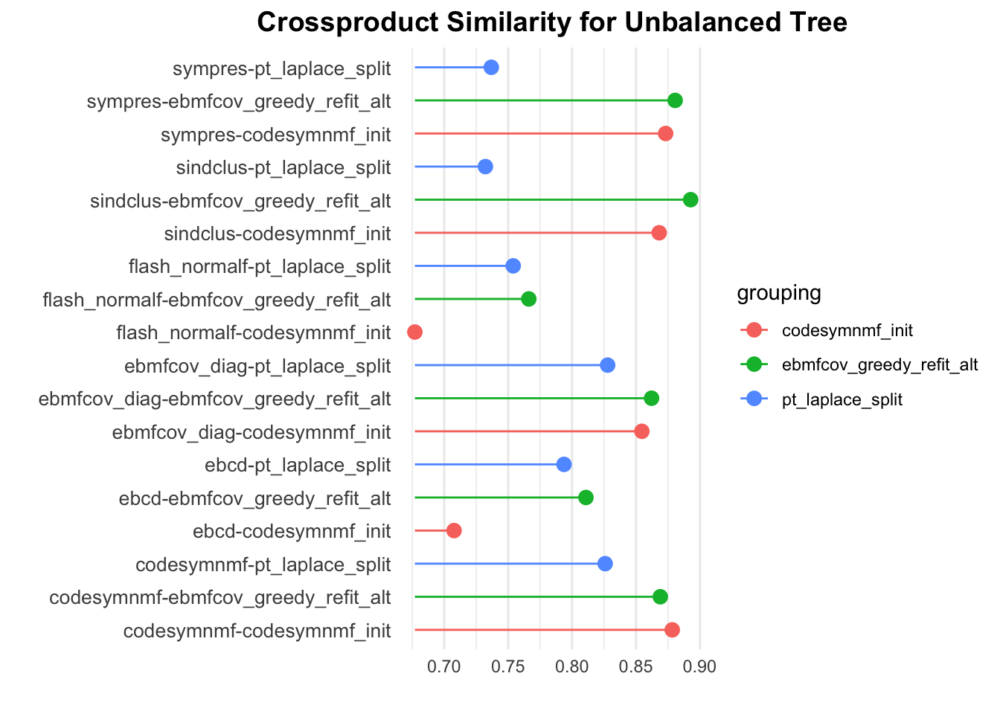
With respect to the crossproduct similarity, I would say the EBMFcov greedy plus refitting initialization generally performs the best.
Proportions
dscout %>% filter(simulate == 'unbaltree_4pop', score == 'prop_true_high_cos_sim') %>% group_by(analyze, analyze.ebnm_fn, initialization) %>% summarise(avg_result = mean(score.result))`summarise()` has grouped output by 'analyze', 'analyze.ebnm_fn'. You can
override using the `.groups` argument.# A tibble: 18 × 4
# Groups: analyze, analyze.ebnm_fn [6]
analyze analyze.ebnm_fn initialization avg_result
<chr> <chr> <chr> <dbl>
1 codesymnmf <NA> codesymnmf_init 0.771
2 codesymnmf <NA> ebmfcov_greedy_refit_… 0.857
3 codesymnmf <NA> pt_laplace_split 0.971
4 ebcd ebnm::ebnm_generalized_binary codesymnmf_init 0.7
5 ebcd ebnm::ebnm_generalized_binary ebmfcov_greedy_refit_… 0.814
6 ebcd ebnm::ebnm_generalized_binary pt_laplace_split 0.857
7 ebmfcov_diag ebnm::ebnm_generalized_binary codesymnmf_init 0.643
8 ebmfcov_diag ebnm::ebnm_generalized_binary ebmfcov_greedy_refit_… 0.886
9 ebmfcov_diag ebnm::ebnm_generalized_binary pt_laplace_split 0.957
10 flash_normalf ebnm::ebnm_generalized_binary codesymnmf_init 0.429
11 flash_normalf ebnm::ebnm_generalized_binary ebmfcov_greedy_refit_… 0.6
12 flash_normalf ebnm::ebnm_generalized_binary pt_laplace_split 0.557
13 sindclus <NA> codesymnmf_init 0.514
14 sindclus <NA> ebmfcov_greedy_refit_… 0.771
15 sindclus <NA> pt_laplace_split 0.386
16 sympres <NA> codesymnmf_init 0.529
17 sympres <NA> ebmfcov_greedy_refit_… 0.771
18 sympres <NA> pt_laplace_split 0.357unbaltree_prop_results <- dscout %>% filter(simulate == 'unbaltree_4pop', score == 'prop_true_high_cos_sim') %>% group_by(analyze, analyze.ebnm_fn, initialization) %>% summarise(metric = mean(score.result)) %>% mutate(method = paste(analyze, initialization, sep='-')) %>% rename(grouping = initialization)`summarise()` has grouped output by 'analyze', 'analyze.ebnm_fn'. You can
override using the `.groups` argument.dot_plot(baltree_prop_results, 'Proportion Recovered for Unbalanced Tree', '', '')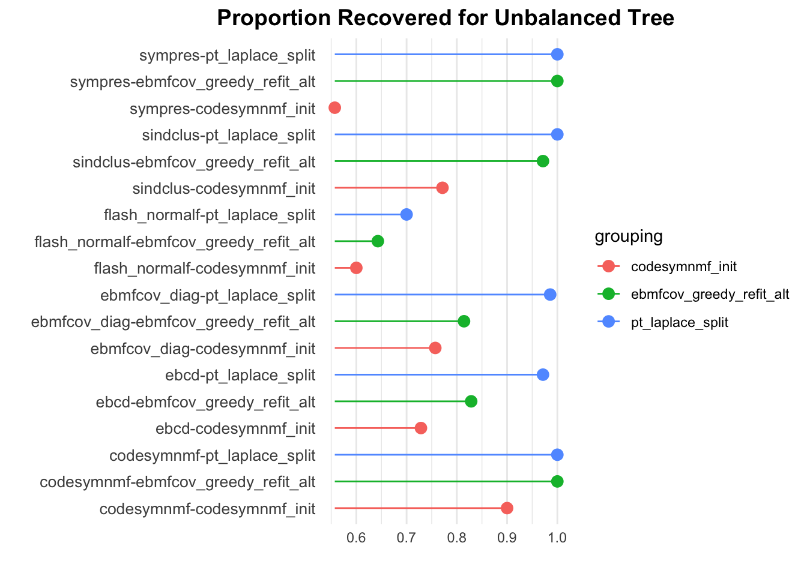
With respect to the proportion recovered metric, the point-Laplace plus splitting initialization appears to perform the best and the CoDesymNMF initialization appears to perform the worst.
prop_data_df <- dscout %>% filter(simulate == 'unbaltree_4pop', score %in% c('prop_true_high_cos_sim', 'prop_est_high_cos_sim')) %>% group_by(analyze, analyze.ebnm_fn, initialization, score) %>% summarise(metric = mean(score.result)) %>% mutate(method = paste(analyze, initialization, sep='-'))`summarise()` has grouped output by 'analyze', 'analyze.ebnm_fn',
'initialization'. You can override using the `.groups` argument.prop_est_high_cos_sim_vals <- prop_data_df[(prop_data_df$score == 'prop_est_high_cos_sim') , ][['metric']]
prop_true_high_cos_sim_vals <- prop_data_df[(prop_data_df$score == 'prop_true_high_cos_sim') , ][['metric']]
methods <- prop_data_df[(prop_data_df$score == 'prop_est_high_cos_sim') , ][['analyze']]
initialization <- prop_data_df[(prop_data_df$score == 'prop_est_high_cos_sim') , ][['initialization']]
prop_plot_df <- data.frame(method = methods, prop_est_high_cos_sim_vals = prop_est_high_cos_sim_vals, prop_true_high_cos_sim_vals = prop_true_high_cos_sim_vals, initialization = initialization)ggplot(data = prop_plot_df, aes(x = prop_est_high_cos_sim_vals, y = prop_true_high_cos_sim_vals, color = initialization, shape = method)) +
facet_wrap(~ initialization, scales = "fixed") +
geom_point(size = 3) +
labs(title = "",
x = "Proportion of Estimate Capturing True Signal",
y = "Proportion of True Signals Recovered")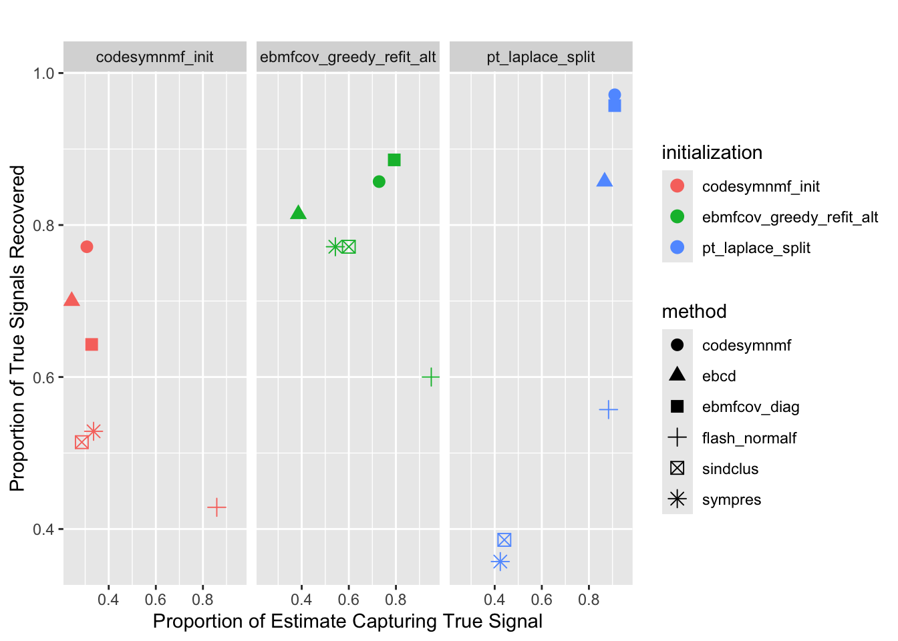
Some of the point-Laplace plus splitting initialized methods perform very well; however some of the methods do not perform very well. The CoDesymNMF initialized methods generally return many extra factors.
sessionInfo()R version 4.3.2 (2023-10-31)
Platform: aarch64-apple-darwin20 (64-bit)
Running under: macOS 15.6
Matrix products: default
BLAS: /Library/Frameworks/R.framework/Versions/4.3-arm64/Resources/lib/libRblas.0.dylib
LAPACK: /Library/Frameworks/R.framework/Versions/4.3-arm64/Resources/lib/libRlapack.dylib; LAPACK version 3.11.0
locale:
[1] en_US.UTF-8/en_US.UTF-8/en_US.UTF-8/C/en_US.UTF-8/en_US.UTF-8
time zone: America/Chicago
tzcode source: internal
attached base packages:
[1] stats graphics grDevices utils datasets methods base
other attached packages:
[1] pheatmap_1.0.12 ggrepel_0.9.6 ggplot2_3.5.2 dplyr_1.1.4
[5] workflowr_1.7.1
loaded via a namespace (and not attached):
[1] gtable_0.3.6 jsonlite_2.0.0 compiler_4.3.2 promises_1.3.3
[5] tidyselect_1.2.1 Rcpp_1.0.14 stringr_1.5.1 git2r_0.33.0
[9] callr_3.7.6 later_1.4.2 jquerylib_0.1.4 scales_1.4.0
[13] yaml_2.3.10 fastmap_1.2.0 R6_2.6.1 labeling_0.4.3
[17] generics_0.1.4 knitr_1.50 tibble_3.3.0 rprojroot_2.0.4
[21] RColorBrewer_1.1-3 bslib_0.9.0 pillar_1.10.2 rlang_1.1.6
[25] utf8_1.2.6 cachem_1.1.0 stringi_1.8.7 httpuv_1.6.15
[29] xfun_0.52 getPass_0.2-4 fs_1.6.6 sass_0.4.10
[33] cli_3.6.5 withr_3.0.2 magrittr_2.0.3 ps_1.7.7
[37] grid_4.3.2 digest_0.6.37 processx_3.8.4 rstudioapi_0.16.0
[41] lifecycle_1.0.4 vctrs_0.6.5 evaluate_1.0.4 glue_1.8.0
[45] farver_2.1.2 whisker_0.4.1 rmarkdown_2.29 httr_1.4.7
[49] tools_4.3.2 pkgconfig_2.0.3 htmltools_0.5.8.1